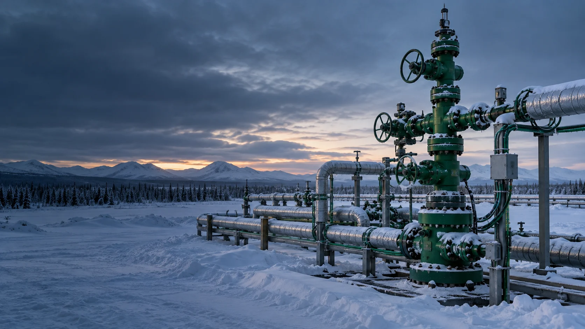
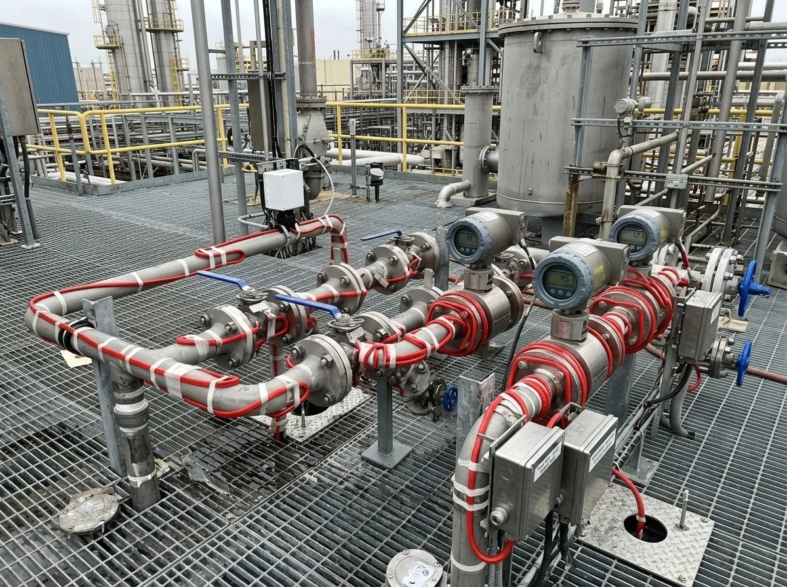
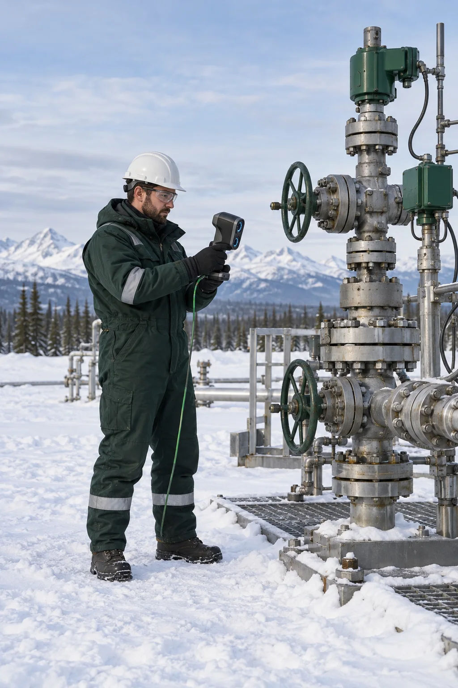

Замерзание жидкости
Защита наземных участков, труб и арматуры от ледяных пробок.

Инженерные системы под ключ
Защищаем устьевую арматуру, выкидные и импульсные линии от замерзания и отложений. Поддерживаем необходимую температуру, помогая снижать простои скважин и затраты на тепловые обработки.
Технологические проблемы на кустовой площадке приводят к остановкам, затратам на очистку и риску повреждения оборудования.
Защита наземных участков, труб и арматуры от ледяных пробок.
Поддержание температуры для снижения риска отложений.
Температурный режим с учётом свойств среды.
Защита импульсных линий, датчиков и исполнительных узлов.
Подбираем способ обогрева отдельно для прямых участков и сложных узлов, требующих регулярной ревизии.
Ёлки, задвижки, дроссели, запорные и регулирующие узлы.
Наземные участки от скважин до АГЗУ и манифольды.
Импульсные линии, датчики и обратные клапаны.
Краны, задвижки, ПЭГ-отстойники и ёмкости.

Комплексное решение
Рассчитываем теплопотери, длину и мощность кабеля, толщину теплоизоляции и режим управления. Для узлов сложной формы производим съёмные термочехлы «Корда-ЧСТЭ».
Один подрядчик для расчёта, изготовления съёмной изоляции, комплектации и ввода системы в работу.
Термочехлы по индивидуальным размерам.
Точная геометрия арматуры без разборки.
Мощность, кабель и изоляция по теплопотерям.
Проектирование, поставка, монтаж и сервис.
Решения для экстремально низких температур.
Официальное представительство производителя.
Доступ к арматуре без разрушения изоляции.
3D-модели, спецификации и схемы.
От первичной консультации до пусконаладки и сопровождения.
Уточняем объект и задачу.
Данные и 3D-сканирование.
Теплопотери, мощность и изоляция.
3D-модели, схемы и спецификации.
Конструкция, стоимость и сроки.
Термочехлы и комплектация системы.
Доставка оборудования на объект.
Монтаж, измерения и настройка.
Гарантийное обслуживание.

Исполнение и характеристики оборудования определяются условиями объекта и проектом.
Саморегулирующиеся и резистивные решения.
Изготовление под геометрию арматуры.
Шкафы, терморегуляторы и датчики.
Муфты, коробки, вводы, металлорукава и крепёж.
По этим данным определяем теплопотери, состав системы и предварительную стоимость.
Обогрев арматуры должен быть безопасным, ремонтопригодным и достаточным для технологического режима.
Недостаточный нагрев не предотвращает пробки, избыточный перегревает узлы.
Без теплоизоляции растёт расход энергии.
Подбираем соответствующее исполнение и маркировку.
Съёмные чехлы упрощают доступ к узлам.
Опыт применения электрообогрева и съёмной теплоизоляции на нефтегазовом оборудовании.
Термочехлы с обогревом для работы до −50 °C.
Монтаж 20–30 минут
Обогрев обратного дискового затвора при −55 °C.
Монтаж за 10 минут
«Корда-ЧСТЭ-200» с кабелем Lavita и терморегулятором.
Решение для поверхности +115 °C и эксплуатации от −50 до +40 °C.
Запрос инженерного расчёта
Пришлите перечень арматуры, фотографии или чертежи, параметры среды, требуемую температуру и доступную мощность.